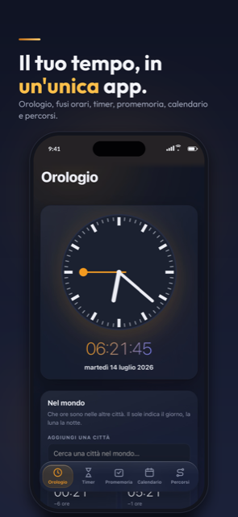
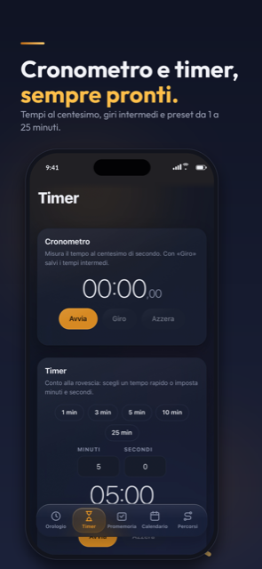
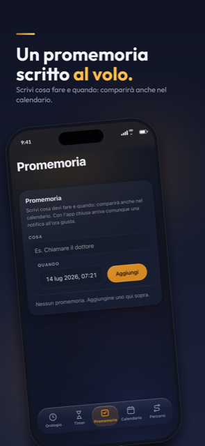
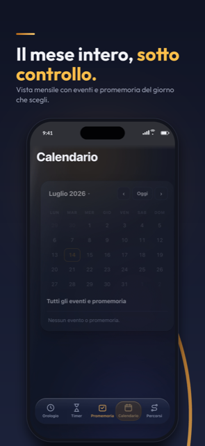
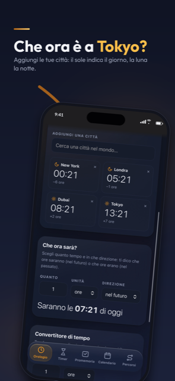
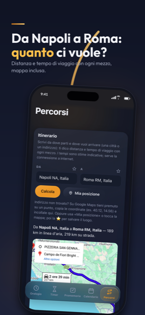

Orologio nel mondo
L'ora esatta di qualsiasi città, con il sole di giorno e la luna di notte. E scopri che ora sarà fra ore, minuti e secondi.
Orologio mondiale, cronometro, timer, promemoria con notifiche, calendario e percorsi. Semplice, veloce, in italiano.

Tutto quello che riguarda il tuo tempo, riunito in un'app leggera che funziona anche senza connessione.
L'ora esatta di qualsiasi città, con il sole di giorno e la luna di notte. E scopri che ora sarà fra ore, minuti e secondi.
Preciso al centesimo di secondo, con i giri intermedi per allenamenti e gare.
Pronto in un tocco: 1, 3, 5, 10 o 25 minuti, oppure il tempo che scegli tu. Ti avvisa anche ad app chiusa.
Scrivi cosa e quando: la notifica suona all'ora giusta, anche con l'iPhone in tasca e l'app chiusa.
Eventi e promemoria mese per mese, a colpo d'occhio, con la vista di tutto l'anno.
Da dove sei a dove vuoi andare: distanza, mappa e tempi di viaggio per ogni mezzo, dal treno all'aereo.
Scorri le schermate: è così che Tempo ti accompagna ogni giorno.





Scarica Tempo gratis dall'App Store e porta orologio, timer, promemoria, calendario e percorsi sempre con te.
Scarica suApp Store